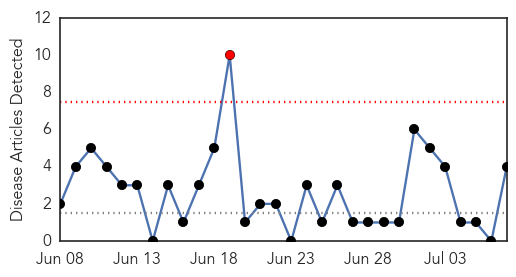
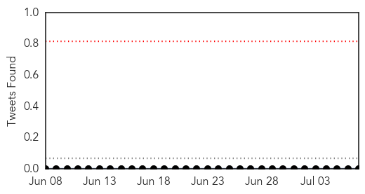
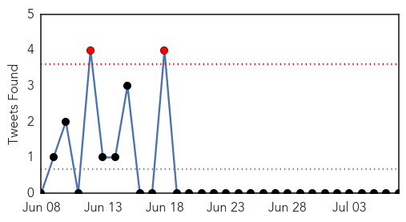
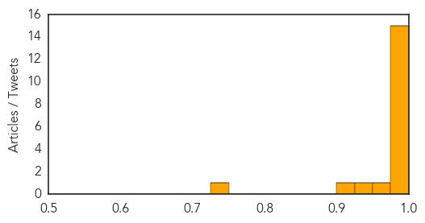

Swine Flu
30-Day Web Trend
1 alerts, 0 warnings

30-Day Twitter Trend
1 alerts, 0 warnings

Article Locations

Article Confidences

Top Articles:
Top Tweets:
-
No tweets found for Jul 07, 2015
MERS
30-Day Web Trend
0 alerts, 7 warnings

30-Day Twitter Trend
0 alerts, 13 warnings

Article Locations

Article Confidences
Top Articles:
- 0.999
- Chinatopix: MERS-Cov Outbreak In The Philippines? Authorities Contain 2 Cases
- 0.999
- Azerbaijan takes measures against MERS
- 0.999
- (News Focus) Ignorance, unique culture fuel MERS outbreak in S. Korea
- 0.998
- Philippines reports 2nd MERS case as Korean, Saudi totals grow
- 0.997
- Philippine bishops sound alarm against MERS ucanews.com
- 0.996
- MERS-Cov Outbreak In The Philippines? Authorities Contain 2 Cases : Science : Chinatopix
- 0.995
- Filipina companion of foreigner with MERS-CoV clear of virus–DOH
- 0.992
- Ministry announces six MERS infections
- 0.990
- Wedding bells for Ashton Kutcher and Mila Kunis
- 0.990
- Justice Carpio confident Tribunal will void 9-dash line
- 0.990
- Greece faces grim reality after FM steps down
- 0.990
- Daily News Highlights
- 0.989
- Doctors favor travel ban vs MERS-CoV but...
- 0.988
- CBCP asks DOH to intensify info drive vs MERS-Cov
- 0.979
- NAIA on heightened alert for Mers-Cov screening
- 0.966
- Close contact of MERS patient tests negative
- 0.926
- Companion of MERS patient tests negative for virus
- 0.905
- NAIA workers protecting selves from MERS-CoV on their own
- 0.731
- Cebu News, The Freeman Sections, The Freeman
Top Tweets:
-
No tweets found for Jul 07, 2015